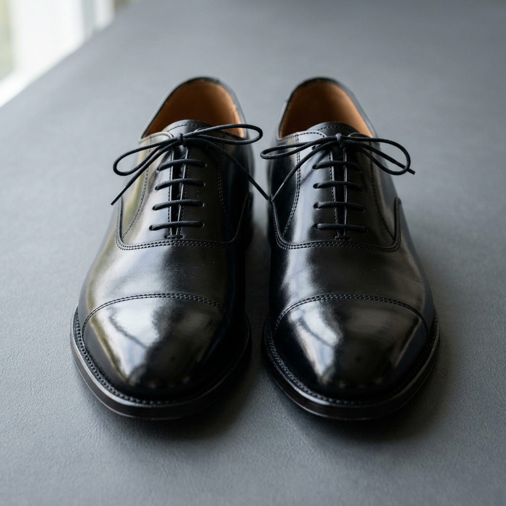

The Ultimate Guide to Styling Black Shoes: Timeless Elegance for Every Occasion
The Hidden Complexity of the "Simple" Black Shoe
It is the most common piece of footwear in the world, yet it is the one most frequently misunderstood. Many men and women believe that because a shoe is black, it automatically goes with everything. This is the 'Black Shoe Paradox.' While black is the ultimate neutral, the wrong silhouette, material, or level of formality can instantly clash with your attire, signaling a lack of stylistic awareness.
Whether you are stepping into a boardroom, attending a black-tie gala, or heading out for a casual weekend brunch, your choice of black shoes acts as the anchor for your entire look. If that anchor is mismatched, the whole ship sinks. This guide is designed to transform your approach to footwear from a functional afterthought into a deliberate statement of authority and taste.

The Psychology of Power: Why Black Footwear Matters
In the world of professional and social signaling, black shoes represent stability, formality, and discipline. Psychologically, black is perceived as a high-authority color. In a professional context, a well-maintained pair of black leather shoes suggests attention to detail and a respect for tradition. When you wear black shoes correctly, you aren't just wearing footwear; you are wearing a heritage of elegance that spans centuries.
The Essential Categories of Black Shoes
To master the look, you must first understand the hierarchy of formality. Not all black shoes are created equal, and knowing which one to reach for is the first step toward conversion-level style.
1. The Formal Foundation: Black Oxfords
The closed-lace system of the Oxford makes it the most formal shoe in a person's arsenal. This is the non-negotiable choice for dark charcoal or navy suits. If the event is formal, the Oxford is your only option. Look for full-grain leather with a slight sheen to ensure longevity and a premium appearance.
2. The Versatile Workhorse: Black Derbies
Often confused with the Oxford, the Derby features an open-lace system. This subtle change makes the shoe slightly less formal, allowing it to transition seamlessly from the office to a smart-casual dinner. It is the perfect pairing for chinos or even high-end denim.
3. The Modern Classic: Black Loafers
Loafers offer a slip-on convenience without sacrificing sophistication. A black penny loafer or a tassel loafer provides a Mediterranean flair that works exceptionally well in transitional weather. They bridge the gap between 'dressed up' and 'relaxed' better than any other style.
Material Matters: Beyond Shiny Leather
The texture of your black shoes dictates the 'vibe' of your outfit. To truly stand out, you must choose your material based on the environment:
- Smooth Calfskin: The gold standard for formal wear. It takes a shine well and offers a sharp, crisp silhouette.
- Suede: Black suede is underrated. It absorbs light rather than reflecting it, providing a rich, matte texture that softens the formality of the shoe. This is ideal for evening events where you want to look sophisticated but approachable.
- Patent Leather: Reserved exclusively for tuxedoes and white-tie events. Its mirror-like finish is designed to complement the silk facings of a dinner jacket.
- Pebble Grain: A rugged, textured leather that is perfect for boots or heavy-set Derbies. It hides scratches well and adds a masculine, utilitarian edge to your look.
How to Pair Black Shoes with Different Colors
The old rules of fashion have evolved, but certain principles remain evergreen for those who want to project confidence:
- With Grey and Charcoal: This is the most natural pairing. Black shoes provide a sharp contrast to lighter greys and a seamless transition to darker charcoal.
- With Navy: A classic power move. While brown shoes are common with navy, black shoes offer a more formal, 'London-style' aesthetic that is perfect for high-stakes meetings.
- With Black: The monochromatic look is sleek and modern. Ensure there is a slight difference in texture between your trousers and your shoes to prevent the outfit from looking like a uniform.
- With Denim: Stick to black boots or clean black sneakers. Avoid overly shiny dress shoes with jeans, as the contrast in formality is often too jarring.
Maintenance: The Secret to Longevity
A high-intent buyer knows that the purchase is only the beginning. To keep black shoes looking their best, you must invest in their care. Because black shows every scuff and speck of dust, regular maintenance is vital. Use a high-quality cream polish to nourish the leather and a wax polish on the toe cap for a high-shine finish. Always use cedar shoe trees to maintain the shape and wick away moisture after a day of wear.
Final Verdict: Investing in Quality
When it comes to black shoes, the 'cost per wear' is the most important metric. A cheap pair of synthetic shoes will crease poorly, breathe poorly, and eventually fall apart, costing you more in the long run. By choosing high-quality construction—such as a Goodyear welt or Blake stitch—you are investing in a piece of footwear that can be resoled and worn for decades. In the world of style, black shoes are the ultimate investment; choose wisely, maintain them well, and they will never let you down.